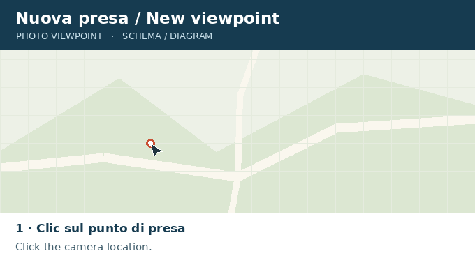
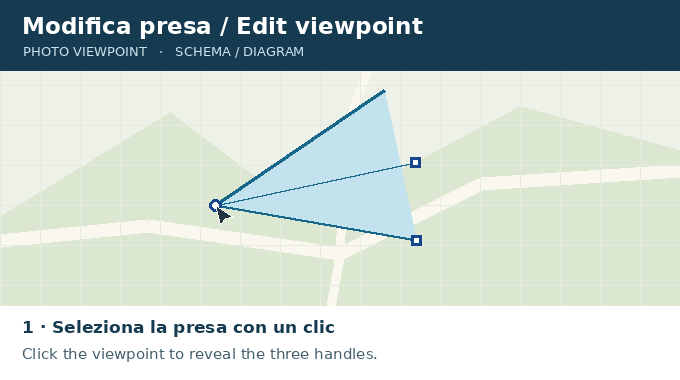

Manuale italiano · English manual
Dimostrazioni animate / Animated demonstrations
Schemi didattici del flusso di lavoro / Workflow diagrams.
Nuova presa / New viewpoint

Scarica / Download GIF
Modifica presa / Edit viewpoint

Scarica / Download GIF